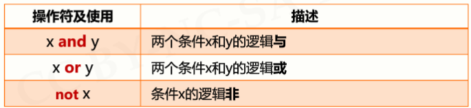
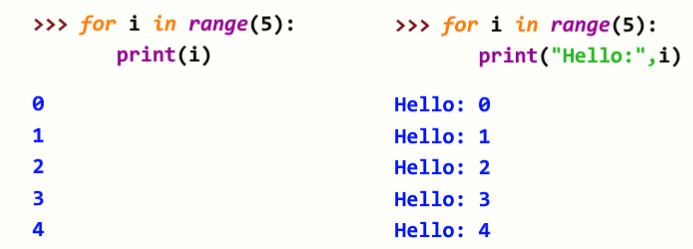

原文连接:https://www.cnblogs.com/wlrblog/p/PythonStudyFour.html
Python学习笔记（四）—— 程序的控制结构
一、程序的控制结构分类
二、程序的分支结构
1、分类
1.1 单分支结构
单分支示例：
1.2 二分支结构
二分支示例：

二分支的紧凑形式：
1.3 多分支结构
多分支举例：
2、条件判断及组合
2.1 条件判断
2.2 条件组合

条件判断及组合示例：
3、程序的异常处理
3.1 异常处理的基本使用
示例1：
示例2:
3.2 异常处理的高级使用
4、程序分支结构应用
4.1 计算“身体质量指数BMI”
4.1.1 定义：
4.1.2 身体质量指数BMI标准
4.1.3 问题需求
4.1.4 思路方法
4.1.5 输出国际的代码
- #CalBMIv1.py
- height, weight = eval(input("请输入身高(米)和体重(公斤)[逗号隔开]: "))
- bmi = weight / pow(height, 2)
- print("BMI 数值为：{:.2f}".format(bmi))
- who = ""
- if bmi < 18.5:
- who = "偏瘦"
- elif 18.5 <= bmi < 25:
- who = "正常"
- elif 25 <= bmi < 30:
- who = "偏胖"
- else:
- who = "肥胖"
- print("BMI 指标为:国际'{0}'".format(who))
4.1.6 输出国内的代码
- #CalBMIv2.py
- height, weight = eval(input("请输入身高(米)和体重\(公斤)[逗号隔开]: "))
- bmi = weight / pow(height, 2)
- print("BMI 数值为：{:.2f}".format(bmi))
- nat = ""
- if bmi < 18.5:
- nat = "偏瘦"
- elif 18.5 <= bmi < 24:
- nat = "正常"
- elif 24 <= bmi < 28:
- nat = "偏胖"
- else:
- nat = "肥胖"
- print("BMI 指标为:国内'{0}'".format(nat))
4.1.7 同时输出国际和国内代码
- #CalBMIv3.py
- height, weight = eval(input("请输入身高(米)和体重(公斤)[逗号隔开]: "))
- bmi = weight / pow(height, 2)
- print("BMI 数值为：{:.2f}".format(bmi))
- who, nat = "", ""
- if bmi < 18.5:
- who, nat = "偏瘦", "偏瘦"
- elif 18.5 <= bmi < 24:
- who, nat = "正常", "正常"
- elif 24 <= bmi < 25:
- who, nat = "正常", "偏胖"
- elif 25 <= bmi < 28:
- who, nat = "偏胖", "偏胖"
- elif 28 <= bmi < 30:
- who, nat = "偏胖", "肥胖"
- else:
- who, nat = "肥胖", "肥胖"
- print("BMI 指标为:国际'{0}', 国内'{1}'".format(who, nat))
三、程序的循环结构
1、遍历循环
1.1 遍历循环的应用
1.1.1 计数循环（N次）

1.1.2 计数循环（特定次）
1.1.3 字符串遍历循环
1.1.4 列表遍历循环
1.1.5 文件遍历循环
2、无限循环
2.1 无限循环应用
3、循环控制保留字：break 和 continue
举例：
四、random 库的使用
1、random 库概述：是使用随机数的Python标准库
2、random 库包括两类函数，常用共8个
2.1 基本随机数函数
例子：
2.2 扩展随机数函数

五、程序控制结构应用场景
1、“圆周率的计算”
1.1 问题分析
方法一：公式法
方法二：蒙特卡罗方法
1.2 公式法 代码：
- #CalPiV1.py
- pi = 0
- N = 100
- for k in range(N):
- pi += 1/pow(16,k)*( \
- 4/(8*k+1) - 2/(8*k+4) - \
- 1/(8*k+5) - 1/(8*k+6) )
- print("圆周率值是: {}".format(pi))
运行结果
1.3 蒙特卡罗方法代码
- #CalPiV2.py
- from random import random
- from time import perf_counter
- DARTS = 1000*1000
- hits = 0.0
- start = perf_counter()
- for i in range(1, DARTS+1):
- x, y = random(), random()
- dist = pow(x ** 2 + y ** 2, 0.5)
- if dist <= 1.0:
- hits = hits + 1
- pi = 4 * (hits/DARTS)
- print("圆周率值是: {}".format(pi))
- print("运行时间是: {:.5f}s".format(perf_counter() - start))
运行结果